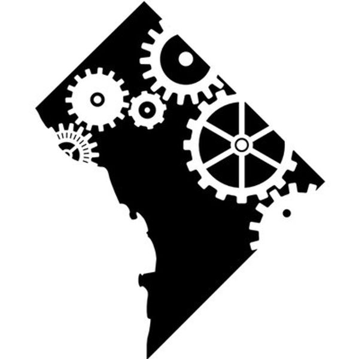

June 6, 7 2018
GovReady PBC is a platinum sponsor for the fourth annual DevOps Days DC on June 6 and 7 at the United States Patent and Trademark Office (USPTO) in Alexandria, Virginia. DevOps is a shift in IT culture and practices to keep up with the velocity of the Cloud. DevOpsDays DC offers the premiere face-to-face networking opportunity for DevOps practitioners in the DC-VA-MD area.
DevOpsDays DC has a distinct focus on speakers from area companies actively implementing DevOps organized into scheduled presentations, ignite talks, and open space conversations. The second annual two-day event is sure to invite many in depth discussions on how to continuously improve DevOps practices across the private and public sector. Topics include DevOps for AI, GDPR, audible microservices, operations innovation, continuous assurance and many others. Attendees, speakers, and sponsors openly discuss successes, changes, and challenges in their organizations along their path to DevOps. DevOpsDays events bring unbelievable value for the $150 ticket price that covers both days and evening social events.
Event Details: